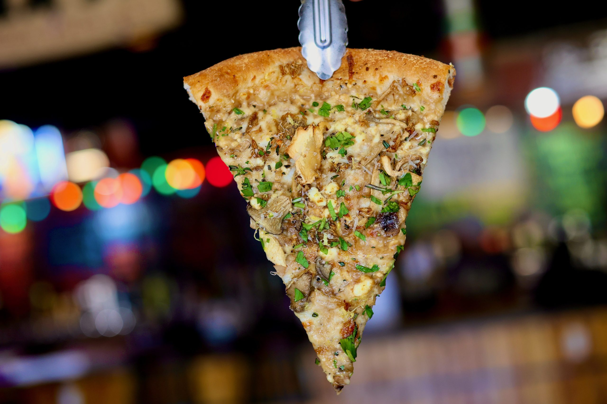

- 

-
Speciality Pizza of the Week - Autumn in New York - $24
Garlic parm base, provolone, smoked ribeye, fresh mozz, red onion, roasted red peppers, jalapeños, finished with grated aged parm and chimichurri
Pandemic Pizza: Our Story
As unapologetic pizza fanatics, we—Alex and Benji—have eaten our way across miles of pizza greatness, sampling the best pies wherever we could find them. When we say we’re passionate, we mean it—we’ve been known to knock back slices twice a day just to conquer our “must-try” list. In December 2020, amid the chaos of the pandemic, we took a leap and opened Dough Boys Pizza. We were temporarily living together, and with our cravings for a perfect slice unmet, Alex decided to try his hand at making dough. For weeks, it was pizza, pizza, and more pizza, all in the name of experimentation. I’ll never forget the day Alex declared his last attempt—it felt like the 100th round, and dough-making is no small feat. From nailing gluten structure to balancing water and air temperature, it all had to sync up. But that day? It clicked. One bite, a nod, and a grin—we knew. “We can sell this,” we said, and just like that, the spark was lit. Today, we’re relentlessly committed to being the best. Our Waynesville Restaurants team chops fresh veggies daily, makes every crust from scratch, and crafts each sauce in-house. We source our produce from Christopher Farms, and our meats are thoughtfully chosen for quality and responsibility. It’s these details that make Dough Boys’ pizzas stand out. Our team is family, and we treat them right, paying above average and ensuring they get holidays to be with their loved ones. Despite what industry pricing standards dictate, we’re passionate about keeping our prices down without sacrificing quality. We’re here for more than just a paycheck; we’re here to serve our community with pride. We want Dough Boys to be your go-to Waynesville restaurant, where you can kick back, grab a slice, and leave your worries at the door—even if just for a little while.